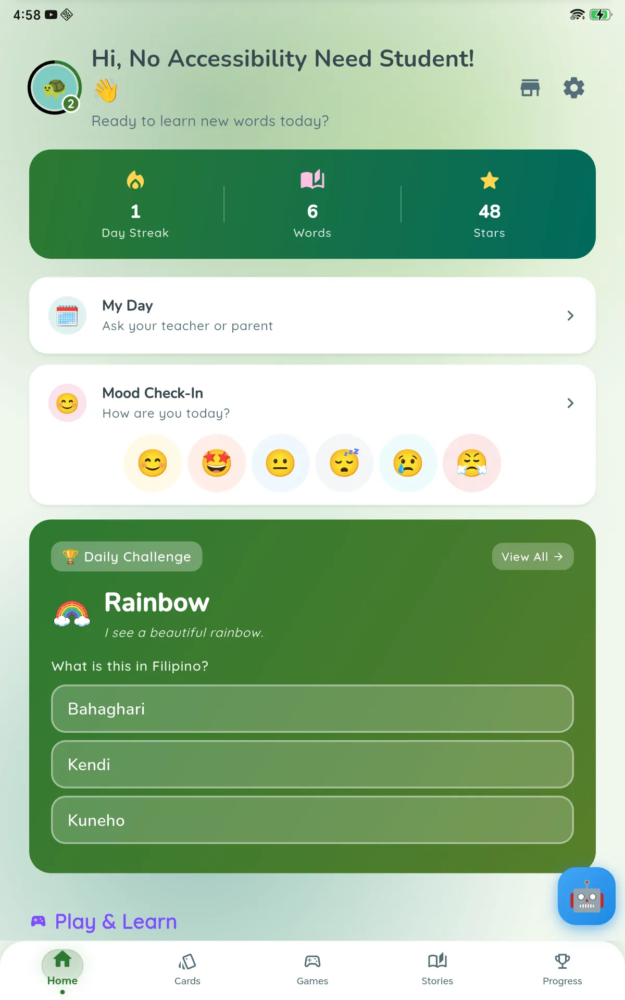
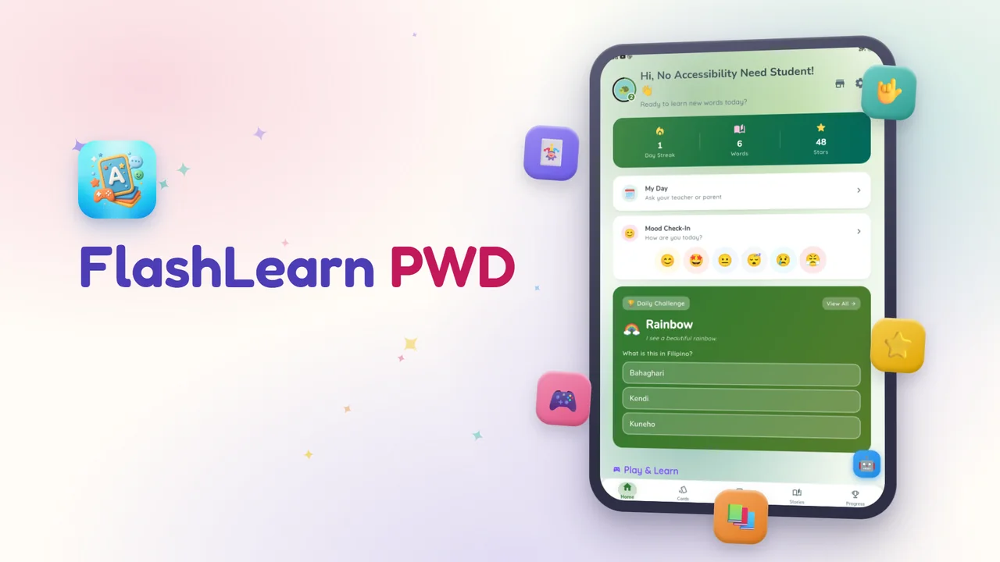

Try it in your browserSubukan sa browser
Flip real flashcards, hear each word and play a round of Word Match — nothing to install.Baliktarin ang totoong flashcard, pakinggan ang bawat salita at maglaro ng Word Match — walang i-install.
AccessibilityAksesibilidad
Saved on this device for every page.Naka-save sa device na ito para sa bawat pahina.
Free · English & Filipino · AndroidLibre · English at Filipino · Android
FlashLearn PWD is a free flashcard learning app built for students with disabilities — bilingual English & Filipino words, sign language practice, games, and stories that adapt to each learner.Ang FlashLearn PWD ay libreng flashcard learning app na ginawa para sa mga mag-aaral na may kapansanan — mga salitang English at Filipino, pagsasanay sa sign language, mga laro, at mga kuwentong umaangkop sa bawat mag-aaral.

WatchPanoorin
A short film with no sound: every word is on the screen, in the language you choose at the top of the page.Isang maikling pelikula na walang tunog: nasa screen ang bawat salita, sa wikang pipiliin mo sa itaas ng pahina.

The film needs the internet. Check the connection, then press Play again.Kailangan ng internet ang pelikula. Tingnan ang koneksyon, saka pindutin muli ang Play.
Show it in class or share it: download the film.Ipalabas sa klase o ibahagi: i-download ang pelikula.
Start hereDito magsimula
Choose what you need now — you can come back for the rest any time.Piliin ang kailangan mo ngayon — puwede mong balikan ang iba anumang oras.
Flip real flashcards, hear each word and play a round of Word Match — nothing to install.Baliktarin ang totoong flashcard, pakinggan ang bawat salita at maglaro ng Word Match — walang i-install.
Free for Android 10 and newer. No account, no ads.Libre para sa Android 10 pataas. Walang account, walang ads.
An 81-second video and an eleven-step picture tour.Isang 81 segundong video at labing-isang hakbang na tour na may larawan.
A printable guide for teachers and parents.Napi-print na gabay para sa mga guro at magulang.
Welcome in FSLPagbati sa FSL
For Deaf and hard-of-hearing visitors: what FlashLearn PWD is and how to get it, signed in FSL.Para sa mga Deaf at mahina ang pandinig: kung ano ang FlashLearn PWD at paano ito makukuha, sa FSL.
Hello, and welcome! This is FlashLearn PWD, a free learning app for children with disabilities. It teaches everyday words in English, Filipino and Filipino Sign Language, with games, stories and a sign dictionary you can watch on this website. There are no ads and no account. To get the app, press the Download button, then follow the steps. Thank you, and enjoy learning!Kumusta, at maligayang pagdating! Ito ang FlashLearn PWD, isang libreng app sa pag-aaral para sa mga batang may kapansanan. Nagtuturo ito ng mga pang-araw-araw na salita sa English, Filipino at Filipino Sign Language, may mga laro, kuwento at diksyunaryo ng senyas na mapapanood sa website na ito. Walang ads at walang account. Para makuha ang app, pindutin ang Download, at sundin ang mga hakbang. Salamat, at masayang pag-aaral!
What's insideAno ang laman
Accessibility isn't an add-on in FlashLearn PWD — it's the foundation. Every feature was designed with PWD learners first.Ang accessibility ay hindi dagdag lamang sa FlashLearn PWD — ito ang pundasyon. Bawat tampok ay dinisenyo nang una para sa mga mag-aaral na PWD.
177 everyday words across 13 decks, each with pictures, real photos, and spoken English & Filipino.177 pang-araw-araw na salita sa 13 deck, bawat isa ay may larawan, totoong litrato, at binibigkas sa English at Filipino.
FSL clips on the cards, an FSL practice game, and a browsable dictionary of 143 signs you can watch right here in your browser.May FSL clips sa cards, FSL practice game, at diksyunaryo ng 143 senyas na mapapanood mismo sa browser.
Matching, spelling, memory, tracing, pronunciation, jigsaw and more, each with three difficulty levels — and every accessibility profile gets its own roster of ten it can actually play.Matching, spelling, memory, tracing, pronunciation, jigsaw at iba pa, bawat isa ay may tatlong antas ng hirap — at may sariling sampung laro ang bawat accessibility profile na kayang-kaya nitong laruin.
Short bilingual stories that reuse learned words, with questions that earn stars and unlock new tales.Maiikling kuwento sa dalawang wika na gumagamit ng mga natutunang salita, may mga tanong na nagbibigay ng stars.
Point the camera at real objects around the house or classroom to find the words being learned, and build up a personal collection — vocabulary practice that leaves the screen.Itutok ang camera sa mga totoong bagay sa paligid para hanapin ang mga salitang pinag-aaralan, at bumuo ng sariling koleksyon — pagsasanay na lumalabas sa screen.
Two learners race the same round on their own devices, side by side or over the internet. Each side keeps its own pacing and narration — and the speed bonus switches off automatically if either player needs it to.Dalawang mag-aaral ang naglalaban sa parehong round sa sariling device, katabi o online. May sariling bilis at narration ang bawat panig — at awtomatikong naaalis ang speed bonus kung kailangan ito ng kahit sinong manlalaro.
Tap picture tiles to build a sentence and the tablet says it aloud, in English or Filipino. Favourite phrases are saved for next time — a voice for learners who don't speak yet.I-tap ang mga larawang tile para bumuo ng pangungusap at bibigkasin ito ng tablet, sa English o Filipino. Nai-save ang mga paboritong parirala para sa susunod — boses para sa mga mag-aaral na hindi pa nagsasalita.
A picture schedule a teacher or parent builds — brush teeth, lunch, reading time — with a reminder at each step and the FSL sign for Deaf learners. A step can even set the games aside for as long as it lasts.Larawang iskedyul na inihahanda ng guro o magulang — magsipilyo, tanghalian, oras ng pagbasa — na may paalala sa bawat hakbang at senyas sa FSL para sa mga Deaf na mag-aaral. Maaari pang isantabi ng isang hakbang ang mga laro habang tumatagal ito.
Made for every learnerPara sa bawat mag-aaral
Choose a learner's disability when you create their profile and the whole app sets itself up for them. Any setting can still be changed by hand.Piliin ang kapansanan ng mag-aaral kapag ginagawa ang kanyang profile at kusang mag-aayos ang buong app para sa kanya. Maaari pa ring baguhin nang mano-mano ang anumang setting.
High-contrast themes, extra-large text, voice-guided navigation that reads screens aloud, and spoken words on every card — so learners who see less can still learn everything.High-contrast na tema, sobrang laking teksto, voice-guided navigation na nagbabasa ng screen, at binibigkas na salita sa bawat card — para ang mga mag-aaral na may mahinang paningin ay matututo pa rin ng lahat.
Filipino Sign Language clips, picture-first cards, and fully visual games mean no learner is left out when sound isn't an option.Mga FSL clip, mga card na nakabatay sa larawan, at ganap na visual na mga laro — walang maiiwang mag-aaral kahit hindi magamit ang tunog.
Gaze Control (head movements and blinks), voice commands, and big touch targets let learners navigate the whole app without fine hand movements.Gaze Control (galaw ng ulo at pagkurap), voice commands, at malalaking touch target — nagagamit ang buong app kahit walang pinong galaw ng kamay.
Dyslexia-friendly fonts, calm reduced-motion mode, adaptive difficulty, short lessons, and gentle repetition support focus and memory.Dyslexia-friendly na font, kalmadong reduced-motion mode, adaptive difficulty, maiikling aralin, at banayad na pag-uulit — suporta sa pokus at memorya.
For learners whose needs cross more than one category: extra-large text at 130%, high contrast, slow text-to-speech, reduced motion, voice navigation and adaptive difficulty are all switched on together — then any single setting can be tuned by hand.Para sa mga mag-aaral na may pangangailangan sa higit sa isang kategorya: sabay na binubuksan ang sobrang laking teksto (130%), high contrast, mabagal na text-to-speech, reduced motion, voice navigation at adaptive difficulty — pagkatapos ay maaaring i-adjust nang mano-mano ang bawat setting.
Hands-free navigation using head movements, blinks and voice commands for learners with motor impairments. See how it works.Hands-free na nabigasyon gamit ang galaw ng ulo, pagkurap at boses para sa mga mag-aaral na may kapansanan sa paggalaw. Tingnan kung paano.
The app watches how a learner is actually doing and eases off or steps up on its own, so practice stays in the zone where learning happens instead of frustration.Pinapanood ng app ang aktuwal na performance ng mag-aaral at kusang binabagalan o hinihigpitan, para manatili ang pagsasanay sa tamang antas at hindi sa pagkabigo.
A friendly buddy that encourages, celebrates wins, and adapts its behavior to each learner's profile.Isang palakaibigang buddy na nagpapalakas ng loob, nakikipagdiwang, at umaangkop sa profile ng bawat mag-aaral.
Beyond the disability preset, choose how each learner communicates (FSL, another sign system, or written words), how they use the tablet (touch, gaze or a game controller), and test accommodations such as extra time or fewer answer choices.Bukod sa preset ng kapansanan, piliin kung paano nakikipag-usap ang bawat mag-aaral (FSL, ibang sign system, o nakasulat na salita), paano nila ginagamit ang tablet (touch, tingin o game controller), at mga akomodasyon sa pagsusulit gaya ng dagdag na oras o mas kaunting pagpipilian.
For teachers & parentsPara sa guro at magulang
Learners get reasons to come back every day, and the adults around them can follow and support every step.May dahilan ang mga mag-aaral para bumalik araw-araw, at nasusubaybayan at nasusuportahan ng mga nakatatanda sa paligid nila ang bawat hakbang.
Stars, streaks, levels, stickers, and printable certificates keep learners coming back every day.Stars, streaks, levels, stickers, at napi-print na certificates — kaya babalik-balikan ng mga mag-aaral araw-araw.
Stars earned from games and stories buy avatars, themes and stickers — a reason to come back that never costs real money.Ang mga bituing nakuha sa laro at kuwento ay pambili ng avatar, tema at sticker — dahilan para bumalik na hindi nagagastusan ng totoong pera.
Six friendly faces and an optional note let a learner say how they feel each day. Check-ins stay on the tablet, where a teacher or parent can spot a hard week.Anim na mukha at opsyonal na note para masabi ng mag-aaral ang nararamdaman araw-araw. Nananatili sa tablet ang mga check-in, kung saan makikita ng guro o magulang ang mahirap na linggo.
Classes, progress reports, notes, and home groups — so the adults in a child's life can support learning. See the Teacher's Guide.Mga klase, progress reports, notes, at home groups — para masuportahan ng mga nakatatanda ang pagkatuto. Tingnan ang Gabay ng Guro.
Assign the same test before and after the lessons and the class report shows each learner's gain. Questions can carry pictures, sound and FSL video, and learners can answer by picture or by recording a signed or spoken video. A portfolio PDF gathers it all for parents.Ibigay ang parehong pagsusulit bago at pagkatapos ng mga aralin at ipapakita ng class report ang pag-unlad ng bawat mag-aaral. Maaaring may larawan, tunog at FSL video ang mga tanong, at maaaring sumagot ang mag-aaral sa larawan o sa pag-record ng video na nagsesenyas o nagsasalita. Tinitipon ng portfolio PDF ang lahat para sa mga magulang.
Teachers, parents and learners share one simple inbox — with a composer a young learner can actually use, so encouragement travels between school and home.May isang simpleng inbox ang guro, magulang at mag-aaral — may composer na kayang gamitin ng batang mag-aaral, para makarating ang pampalakas ng loob sa paaralan at tahanan.
Put the lesson on the classroom screen: the tablet serves a private code-protected page any smart TV or laptop browser can open on the same Wi-Fi. No cables, no Chromecast, nothing leaves the room.Ilagay ang aralin sa screen ng klase: ang tablet ay naghahain ng pribadong pahina na protektado ng code, na kayang buksan ng kahit anong smart TV o laptop sa parehong Wi-Fi. Walang kable, walang Chromecast.
No account, no ads, and learning works without internet. A Guest Player keeps everything on the device. Other profiles are also saved online so they can join a class, send messages and be recovered on a new tablet — and a learner's progress is shared with the teacher or parent whose class or home group they join.Walang account, walang ads, at gumagana ang pag-aaral kahit walang internet. Nasa device lang ang lahat ng data ng Guest Player. Ang ibang profile ay nai-save din online para makasali sa klase, makapagpadala ng mensahe, at maibalik sa bagong tablet — at makikita ng guro o magulang ang progreso ng mag-aaral na sumali sa kanilang klase o home group.
FlashLearn PWD is free for Android 10 and newer — no account, no ads, and lessons work offline.Libre ang FlashLearn PWD para sa Android 10 pataas — walang account, walang ads, at gumagana offline ang mga aralin.